| 日付 | 2014年11月23日（日） |
|---|---|
| 山域 | 大菩薩 |
| メンバー | 家族（妻、長女・3歳、長男・1歳） |
| 山行形態 | 子連れ日帰り |
| アクセス | 車 |
| ルート (Map) | 岩殿山駐車場 (8:43) - (9:35) 岩殿山 - (10:57) 天神山 (11:36) - (12:01) 稚児落し - (12:43) 車道 - (13:44) 岩殿山駐車場 |
今週は久しぶりに岩殿山に行ってみることにする。
お気に入りの山で、この山に登るのは今回で3度目だ。
岩場の通過がポイントになる山で、娘にとっては初めての本格的な鎖場だ。
岩殿山には専用の駐車場がある。標高340m。
駐車場からは富士山が見える。
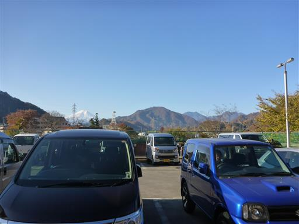
しばらく車道を歩くと登山道入口に到着する。
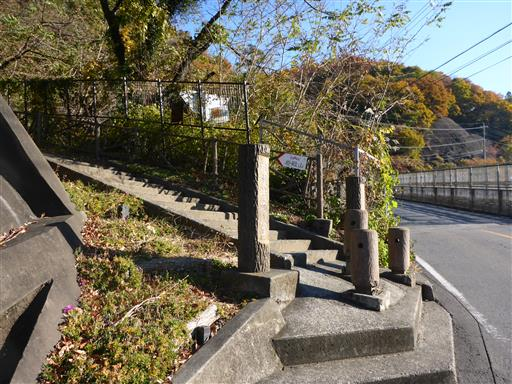
見上げると岩殿山の岩壁が見える。
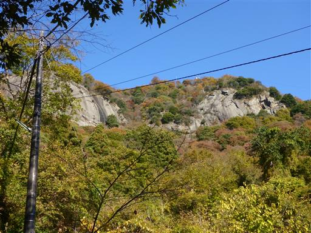
振り返ると富士山がきれいだ。
この山に来るときはいつも快晴だ。
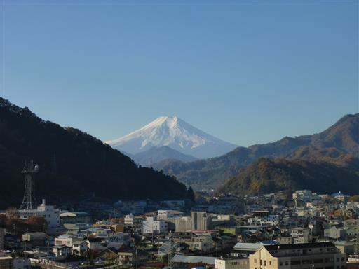
この辺りは岩殿山丸山公園として整備されている。
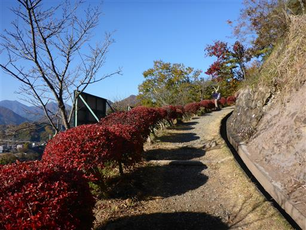
門を潜ると少し開けた空間がある。
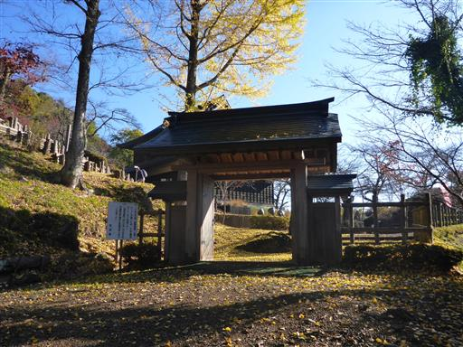
地面に敷き詰められたイチョウの葉が美しい。
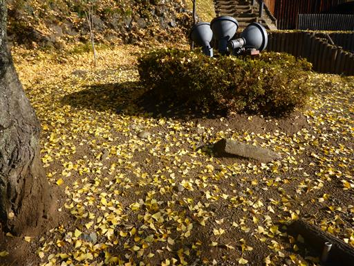
モミジはまだ紅葉している。若干葉が茂りすぎだ。
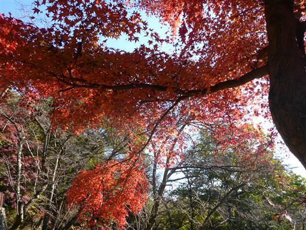
石段を登っていく。公園なので山道はほとんどない。
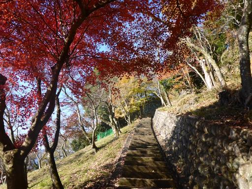
ここは両側の巨岩を利用して城門を築いていた場所だ。
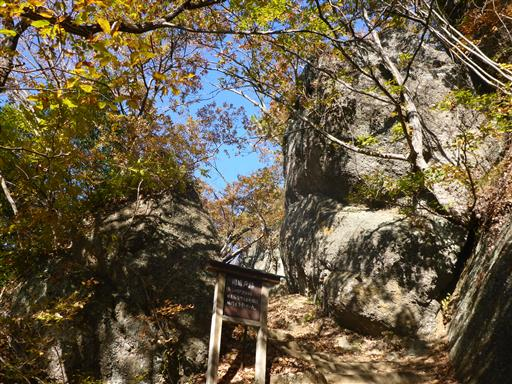
岩殿山の山頂に到着する。標高634m。
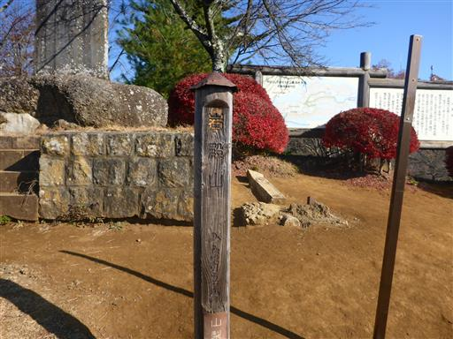
山頂からも富士山がきれいに見える。今は新雪に輝く美しい時期だ。
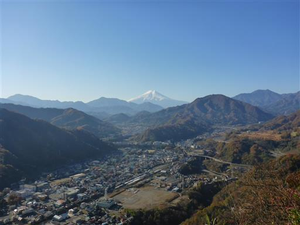
眼下の桂川と道志の山々。
岩殿山の本当の山頂は別の場所にあるのだが、まだ行程が長いため先に進むことにする。
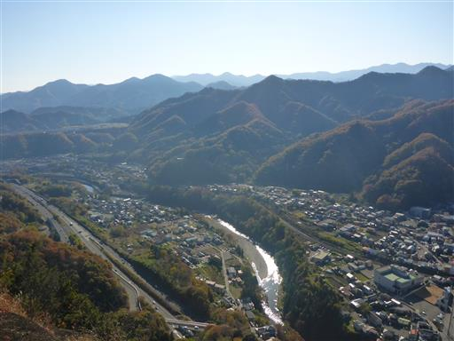
来た道を少し引き返して、分岐点から稚児落しへ向かう。
ここからは本格的な登山道だ。
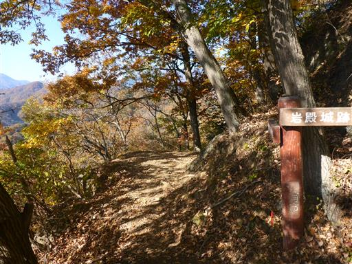
斜面が急で滑りやすい。案外難しい道だ。
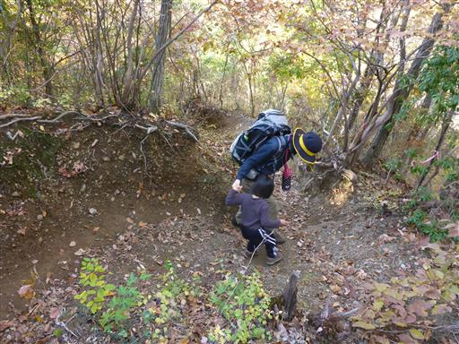
最初の岩場が現れる。
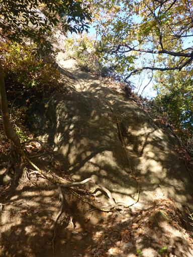
娘は鎖を掴んで頑張って登っている。
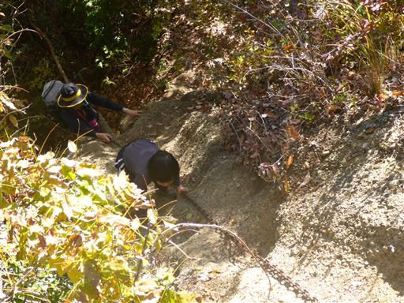
次の岩場は難易度が高い。
手足をかけるところが整備されているのがありがたい。
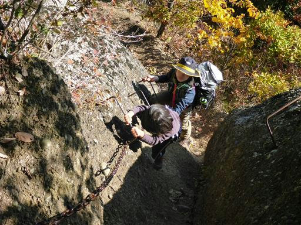
岩の上に出ると展望が広がる。
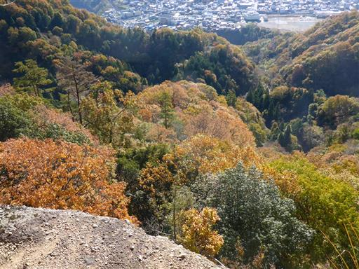
ロープにぶら下がる娘。その先は崖なのだが怖くないのだろうか？
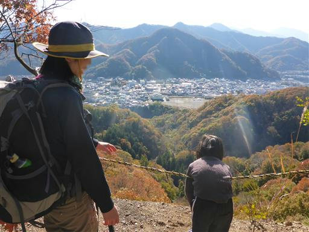
所々に鎖場のある登山道なのだが、安全な迂回路もある。
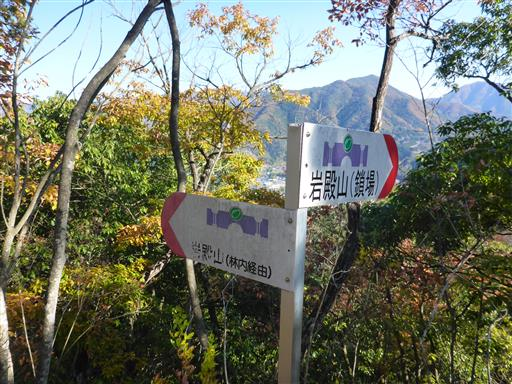
道が平坦になると走り出す。急峻な山なので危なっかしい。
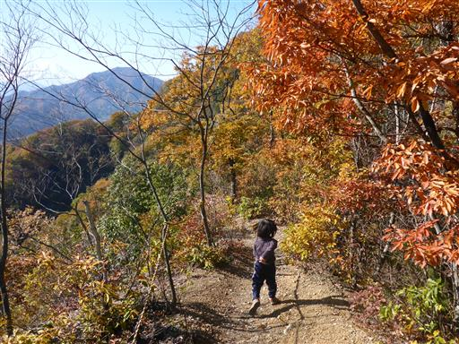
次は岩場のトラバース。手すりを握って慎重に通過する。
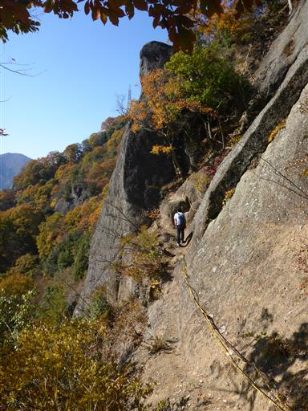
振り返ると先ほど登った岩殿山が見える。
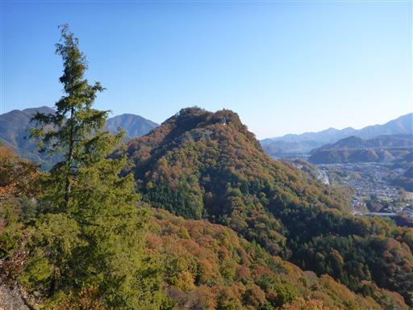
途中にある天神山で昼食をとる。
狭い狭い山頂だが、他に良いポイントが見つからなかった。
少なくとも崖がある稚児落しのような場所では昼食を取る気にならない。
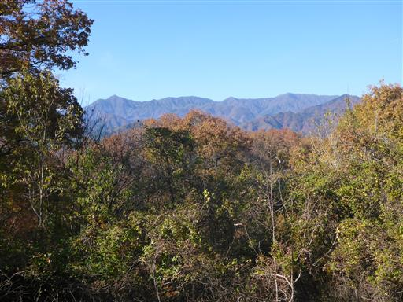
昼食をとったら出発。しばらく歩くと稚児落しの岩壁が見えてくる。
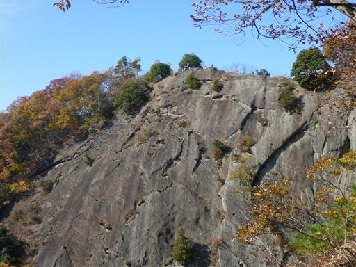
歩いてる場所も左手は崖で危険なので、手をつないで歩く。
娘は全く怖くないようだ。落ちたらどうするのか聞いてみたら「また登ってくる」とのこと…
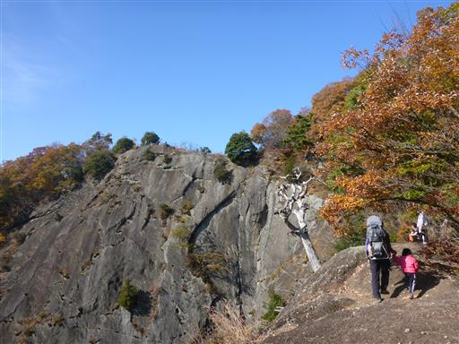
かなりの高度感がある。落ちたらどう考えても助からない。
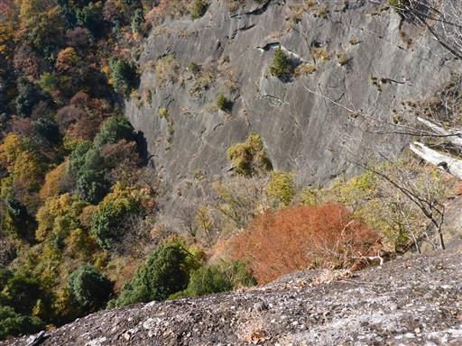
稚児落しの岩壁の上に出てきた。
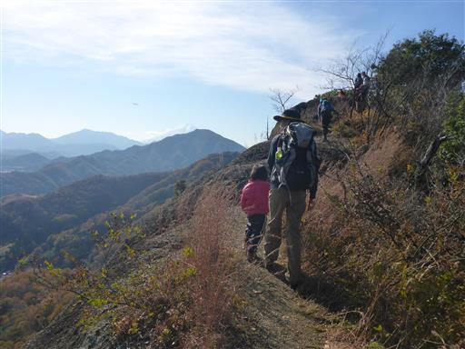
先ほど歩いた岩尾根が見える。
多くの人が休憩しているが、歩き回る息子を下ろすわけにもいかない。
岩壁を眺めたら、すぐに出発する。
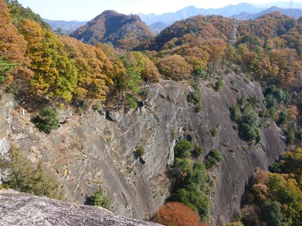
下山道も斜面が急で歩きにくい。
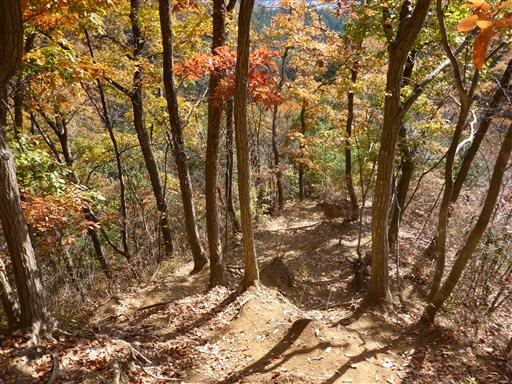
慎重に下る。
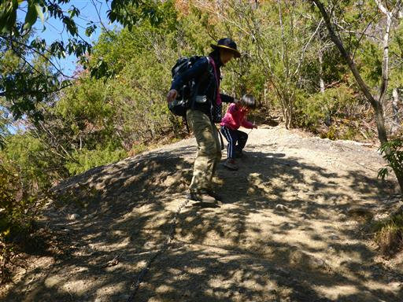
所々に岩が露出している。山全体が岩がちな地形のようだ。
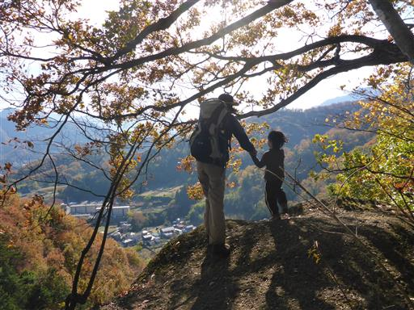
無事車道に下山する。しかしここから駐車場は遠く、車道歩きは長い。
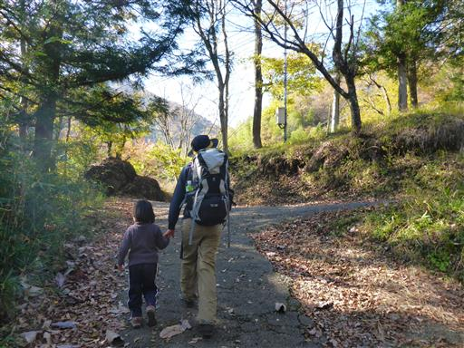
岩殿山が見渡せる。稚児落しは左奥の方でここからは見えない。

川にやたら大きな岩が転がっている。
すぐ側に家があるが、こんな大岩が転がってきたらたまらない。
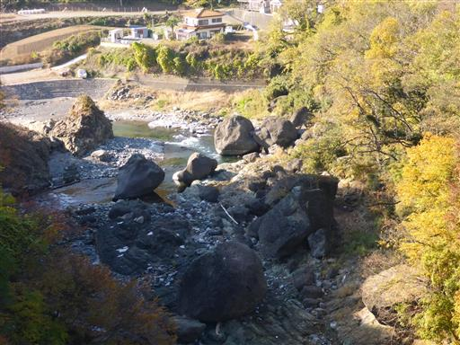
駐車場に戻ってくる。
下山地点で待っててもらって車でお迎えかと思っていたが、娘は車道もよく歩いた。
少し長い道のりの山も、少しずつ登れるようになってきたようだ。
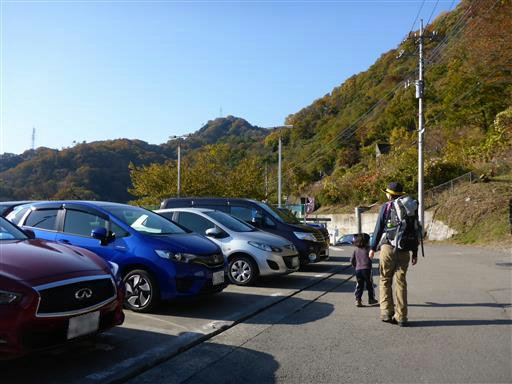